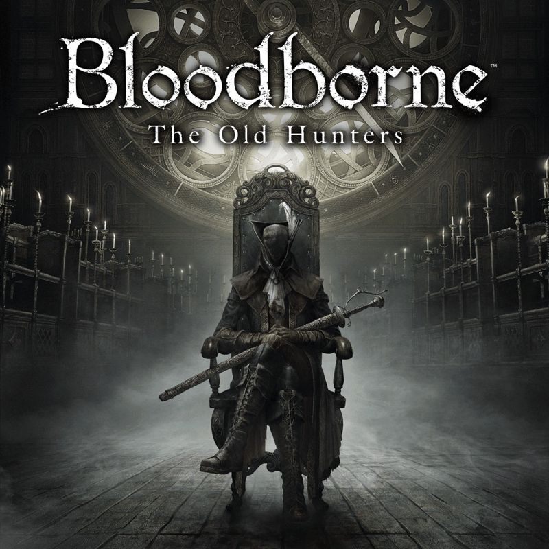

Inicio
Bloodborne foi lançado em março de 2015 e recebeu aclamação da crítica, com elogios direcionados à sua jogabilidade, particularmente seu alto nível de dificuldade, atmosfera, design de som, temas Lovecraftianos e design de mundo interconectado. Algumas críticas foram direcionadas ao seu desempenho técnico no lançamento, que foi aprimorado com as atualizações pós-lançamento. Uma expansão adicionando conteúdo adicional, The Old Hunters, foi lançada em novembro de 2015. No final de 2015, o jogo vendeu mais de dois milhões de cópias em todo o mundo. Bloodborne ganhou vários prêmios e foi citado como uma obra-prima, sendo considerado um dos maiores videogames já feitos. Algumas mídias e adaptações relacionadas também foram lançadas, incluindo um jogo de cartas, um jogo de tabuleiro e uma série de quadrinhos.

História
Bloodborne se passa em Yharnam, uma cidade gótica decrépita conhecida
por seus avanços médicos em torno da prática de administração de
sangue. Ao longo dos anos, muitos viajantes viajam para a cidade em
busca do remédio para curar suas aflições; o personagem do jogador
viaja para Yharnam em busca da cura, algo conhecido como Paleblood,
para uma doença não especificada. No entanto, ao chegar na cidade,
descobre-se que Yharnam é atormentado por uma doença endêmica que
transformou a maioria de seus cidadãos em criaturas bestiais. O
jogador deve navegar pelas ruas de Yharnam durante a noite de The Hunt
e superar seus habitantes violentamente enlouquecidos e monstros
horríveis para parar a fonte da praga e escapar do Pesadelo. Há muito
tempo, os residentes de Yharnam começaram a adorar seres cósmicos
antigos e sobrenaturais conhecidos como os Grandes, depois que
estudiosos do Colégio de Byrgenwerth descobriram algo conhecido como
"médium" nas ruínas de uma civilização antiga e altamente avançada,
sobre a qual Yharnam foi construída. Os Grandes forneceram o sangue
curativo pelo qual Yharnam era famoso, que também é a fonte da
praga.
O Caçador encontra sua primeira lanterna, que quando acesa os
transporta para um reino espectral chamado Sonho do Caçador, onde
encontram Gehrman, um idoso cadeirante que dá conselhos, e a Boneca,
uma boneca viva que ajuda o jogador a subir de nível. . Gehrman
explica que, para obter o sangue que procuram e escapar do sonho, eles
devem caçar as feras que assolam Yharnam e deter a fonte da praga.
Com a morte de Rom, o Caçador ganha acesso a um grau mais elevado de
percepção e vê a Rainha Yharnam, um antigo ser da civilização morta
que supostamente gerou Mergo, a fonte do Pesadelo. Com sua nova
percepção, o Caçador pode se aventurar na vila anteriormente escondida
de Yahar'gul, onde os agora visíveis Grandes residem para serem
pesquisados e adorados pela Escola de Mensis. Os estudiosos
procuraram construir um receptáculo para um Grande, conhecido como O
Renascido. Após derrotá-lo, o jogador acessa o reino espectral chamado
Nightmare of Mensis, onde descobre a cabeça insana dos estudiosos,
Micolash. Depois de matá-lo, o jogador encontra Mergo e seu
guardião.
Depois de matar a Ama de Leite de Mergo e deixar Mergo morrer, a fase
final do jogo é iniciada. Quando o Caçador retorna ao Sonho do
Caçador, Gehrman se oferece para devolvê-los ao mundo desperto pela
manhã.[42] Neste ponto, três finais diferentes são possíveis,
dependendo das ações do jogador. Escolher aceitar a oferta de Gehrman
resulta no final de Yharnam Sunrise: Gehrman usa sua foice para
decapitar o Caçador, que desperta em Yharnam quando o sol nasce. No
Sonho do Caçador, a Boneca se despede do Caçador e reza para que eles
vivam felizes, tendo escapado do Pesadelo. Recusar a oferta de Gehrman
desbloqueia um dos dois finais. O segundo final, Honrando Desejos, é o
final padrão para este caso. Para evitar que o Caçador fique preso no
sonho, Gehrman luta contra eles. Depois que Gehrman é derrotado, um
Grande conhecido como a Presença da Lua chega e abraça o Caçador,
ligando-o ao Sonho do Caçador. A Boneca é vista empurrando o Caçador,
agora sentado na cadeira de rodas de Gehrman, comentando que uma nova
Caçada começará, significando que o Caçador assumiu o lugar de Gehrman
como o zelador do Sonho. Ao longo do jogo, o jogador pode encontrar
cordões umbilicais formados como resultado de Great Ones tentando se
reproduzir com humanos como substitutos. Se o jogador consumir três
Terceiros Cordões Umbilicais antes de recusar a oferta de Gehrman, o
final do Início da Infância é desbloqueado. Depois que Gehrman é
derrotado e a Presença da Lua aparece, o Caçador resiste e luta contra
ela. Ao derrotar a Presença da Lua, o Caçador se transforma em um bebê
Grande e é levado pela Boneca.
Expansão
O jogador segue para o Research Hall, onde Simon revela que para encontrar o segredo do Pesadelo, o jogador deve chegar à Astral Clocktower e matar Lady Maria, outra das primeiras caçadoras e uma das alunas de Gehrman. Depois de abrir caminho pelo Research Hall, o caçador encontra e mata os Living Failures que residem no jardim Lumenwood em frente à torre do relógio de Maria. Ao derrotar Maria, o jogador revela o segredo que ela estava protegendo: as ruínas de um vilarejo de pescadores que foi puxado para o Pesadelo e seus habitantes transformados em grotescos monstros parecidos com peixes. Ao explorar a vila, o jogador pode encontrar um Simon mortalmente ferido, que então dá ao jogador uma chave e sua arma, e implora para que o jogador acabe com o Pesadelo. O jogador descobre que o vilarejo é a origem do Pesadelo - resultado de uma maldição lançada sobre os estudiosos de Byrgenwerth e seus subordinados Caçadores, que torturaram e massacraram os habitantes do vilarejo em sua busca pelo conhecimento.
Critica
| Empresa | Nota |
|---|---|
| IGN | 9,1/10 |
| GameSpot | 9/10 |
| Edge | 10/10 |
| Polygon | 9/10 |
| Metacritic | 92 de 100 |